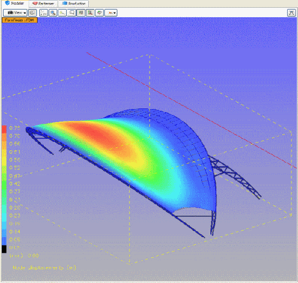

In the next version of Caedium you will be able to perform a CFD simulation of a tensile membrane structure and then export surface pressure coefficient (Cp) data for structural analysis in ixForten 4000. This exciting development will allow ixForten 4000 users to perform non-linear stress analysis to better determine membrane displacement with more precise wind pressure loads than previously available, leading to more cost efficient structures and supports.

Membrane Displacement Calculated by ixForten 4000Model: courtesy of SobreSaliente Ltda, Cp data source: Caedium Professional


 Get our Blog feed
Get our Blog feed